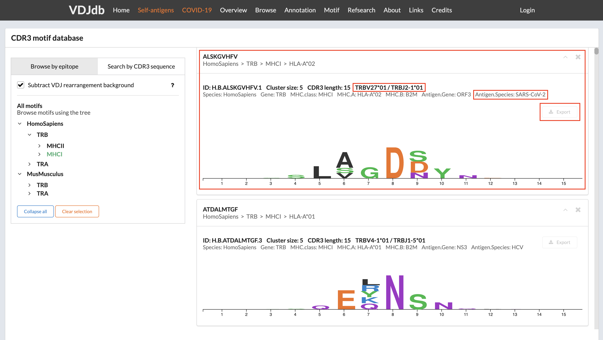
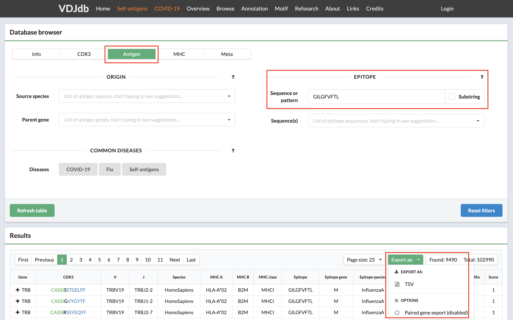

Constructing LIgO motifs inspired by a database of TCR sequences with known antigen specificities¶
LIgO enables the generation of motifs using either (i) a combination of a short amino acid sequence (i.e., a seed) and a list of Hamming distances, representing the allowed deviations from the seed or (ii) a position weight matrix (PWM).
In this tutorial, we demonstrate how one can use a database of TCRs with known antigen specificities to construct more biologically-relevant LIgO motifs. These database-inspired motifs can be used to simulate epitope-specific TCR data, i.e., a collection of TCRs derived from different individuals that are all recognizing the same epitope.
We suggest two approaches for constructing database-inspired LIgO motifs:
In both approaches we will use the VDJdb database (Shugay et al., 2018; Goncharov et al., 2022) to obtain epitope-specific TCRs. However, there are more databases available, such as
McPAS (Tickotsky et al., 2017)
IEDB (Vita et al., 2019)
ATLAS (Borrman et al., 2017)
TCRdb (Chen et al., 2021)
Since similar approach can be applied to the BCR simulation, we also provide BCR/antibody databases:
Basic approach: defining motif based on a seed and a list of Hamming distances¶
Step 1: Constructing seeds from the VDJdb receptors¶
For demonstration purposes, we define three seeds from three TCR beta sequences in the VDJdb (Shugay et al. 2018), all recognizing the DENV3/4 epitope GTSGSPIINR (Table 1). These TCRs need to be transformed to become LIgO seeds. Typically, the epitope-binding motif is located in the middle of CDR3 beta sequences, while the beginning and end are responsible for HLA-binding. Therefore, the center of the CDR3 beta sequence can be used as seed. In this tutorial, we will consider two ways of constructing seeds: long seeds and short seeds.
To construct long seeds, we removed the first and the last 3 amino acids from the CDR3 sequence;
To construct short seeds, we randomly selected a consecutive substring of 3 amino acid long out of the long seed sequence in such way that the resulting seeds are not too similar.
Table 1 shows the long and short seeds that were selected for the three initial TCRs. We will use these two seed sets to perform two LIgO simulations, keeping all other simulation parameters identical except for the seeds.
TCR beta sequence |
TRBV gene |
TRBJ gene |
Epitope |
Long Seed |
Short Seed |
|---|---|---|---|---|---|
CSVELSGINQPQHF |
TRBV29-1 |
TRBJ1-5 |
GTSGSPIINR |
ELSGINQP |
SGI |
CASSPAGGTYEQYF |
TRBV11-2 |
TRBJ2-7 |
GTSGSPIINR |
SPAGGTYE |
PAG |
CASSGGDVREEQYF |
TRBV9 |
TRBJ2-7 |
GTSGSPIINR |
SGGDVREE |
DVR |
Step 2: Defining LIgO motifs based on the seeds¶
After describing the seeds, it is required to define possible deviations that are allowed from these seeds using hamming distance. To select the maximum Hamming distance, consider the length of your seed and the aimed diversity of the final TCR repertoire.
Shorter seeds require lower Hamming distances. However, if the user only wishes to simulated TCRs looking very similar to the seed, the user may also lower the hamming distance.
In this tutorial, a maximum Hamming distance of two was selected to restrict the diversity of the simulated epitope-specific TCR receptors. Below we show an example of how to define motifs using Hamming distance and long seeds. These signals can be further used for LIgO simulation based on rejection sampling or signal implantation.
motifs:
motif1:
hamming_distance_probabilities:
0: 0.1 # 10% of TCRs will contain ELSGINQP as the exact match
1: 0.2 # 20% of TCRs will contain ELSGINQP with 1 mismatch
2: 0.7 # 70% of TCRs will contain ELSGINQP with 2 mismatch
seed: ELSGINQP
motif2:
hamming_distance_probabilities:
0: 0.1 # 10% of TCRs will contain SPAGGTYE as the exact match
1: 0.2 # 20% of TCRs will contain SPAGGTYE with 1 mismatch
2: 0.7 # 70% of TCRs will contain SPAGGTYE with 2 mismatch
seed: SPAGGTYE
motif3:
hamming_distance_probabilities:
0: 0.1 # 10% of TCRs will contain SGGDVREE as the exact match
1: 0.2 # 20% of TCRs will contain SGGDVREE with 1 mismatch
2: 0.7 # 70% of TCRs will contain SGGDVREE with 2 mismatch
seed: SGGDVREE
General tips for defining a motif using a seed and Hamming distance¶
Start with the full seed you want to find back in your simulated TCRs, e.g., ELSGINQP
If you want to use rejection sampling, estimate the maximal hamming distance to finish your simulation in a reasonable time. You can start with a very restrictive hamming distance (e.g. max 1) and adjust it as needed. You can use the feasibility report to estimate the effectiveness of the simulation with a given set of parameters, see How to check feasibility of the simulation parameters.
For example, in this tutorial we used the following rule of thumb:
Seed length of 6-8 => max Hamming distance = 2
Seed length of 9-10 => max Hamming distance = 3
Seed length >10 => test the simulation with a maximal Hamming distance of 3. If not enough TCR are simulated, increase the max Hamming distance up to 4.
If you want to use implanting, you do not need to estimate the feasibility because the simulation will be fast with any Hamming distance.
Start the simulation with the selected seed and Hamming distances. Check for the presence of the predefined motif in the simulated TCRs by clustering or allocating the seed within the TCR sequences.
Enhanced approach: defining a motif based on PWM¶
Option 1: VDJdb CDR3 motif database¶
VDJdb provides a database of CDR3 motifs, which you can access at https://vdjdb.cdr3.net/motif to find suitable motifs. You can search for motifs based on an epitope or a CDR3 sequence or subsequence.
The screenshot below showcases a SARS-CoV-2-specific motif from VDJdb. These SARS-CoV-2-specific TCRs must have 15 amino acids long CDR3 and use the germline genes TRBV27*01 and TRBJ2-1*1.
{kind=link}
After clicking the Export button, you will receive a TSV file containing all the members representing the given motif. To convert the set of CDR3s into a PWM compatible with LIgO, you can use the following code:
import numpy as np
import pandas as pd
from Bio.Align import MultipleSeqAlignment
from Bio.Seq import Seq
from Bio.SeqRecord import SeqRecord
df = pd.read_csv('ClusterMembers_H.A.IVTDFSVIK.tsv', sep='\t')
sequences = [SeqRecord(Seq(seq)) for seq in df['cdr3aa'].tolist()]
alignment = MultipleSeqAlignment(sequences)
def construct_pwm(alignment):
amino_acids = 'ACDEFGHIKLMNPQRSTVWY'
aa_to_index = {aa: i for i, aa in enumerate(amino_acids)}
alignment_matrix = np.array([[aa_to_index.get(aa, -1) for aa in record.seq] for record in alignment])
pwm_matrix = np.array([
np.bincount(alignment_matrix[:, pos][alignment_matrix[:, pos] >= 0], minlength=len(amino_acids))
for pos in range(alignment.get_alignment_length())
]) / len(sequences)
pwm_df = pd.DataFrame(pwm, columns=list(amino_acids))
return(pwm_df)
pwm = construct_pwm(alignment)
pwm.to_csv('pwm.csv', index=False)
Finally, the motif file pwm.csv can be used to define LIgO signal. Additional CDR3 length restricrion (15AA) can be added using the sequence_len_limits parameter in the simulation config item
motifs:
sars-cov-2_motif:
file_path: pwm.csv
threshold: 2 # the threshold to consider the sequence as containing the motif, can be changed
signals:
signal1:
v_call: TRBV27*01
j_call: TRBJ2-1*01
motifs: [sars-cov-2_motif]
Option 2: Database clustering by the user¶
Alternatively, one can cluster VDJdb (or any other database) to obtain PWMs for LIgO simulation. In this tutorial we demonstrate how to cluster VDJdb database using the clusTCR tool (Valkiers et al., 2021). For more information on clusTCR, see clusTCR documentation.
First, one should select a set of TCRs from VDJdb sharing the same epitope specificity (see vdjdb.cdr3.net/search). To obtain accurate PWMs, consider epitope sequences containing a sufficient number of epitope-specific TCRs. For demonstration purposes, we used InfluenzaA epitope GILGFVFTL which is associated with 9490 TCRB receptors, see the figure below.
{kind=link}
Next, run the following script on the downloaded VDJdb data to cluster the TCR receptors and generate clusTCR motifs:
from clustcr import Clustering
import pandas as pd
# Read downloaded vdjdb data
data = pd.read_csv('vdjdb.tsv', sep='\t')
# Remove duplicated CDR3 beta sequences
data = data.drop_duplicates(subset='CDR3')
# Cluster training data for selected epitope using clusTCR
clustering = Clustering(method='MCL')
clustered_data = clustering.fit(data['CDR3'])
# Save clusTCR motifs sorted by cluster size
motifs = clustered_data.summary()
motifs = motifs.sort_values(by='size', ascending=False)
motifs.to_csv('clustcr_motifs.csv', index=False)
The clustcr_motifs.csv file will contain motifs saved in clusTCR format, see the example below. You can read more about clusTCR motif format in the clusTCR documentation. Briefly, the motif uses upper-case for highly conserved amino acids (frequency > 0.7) and lower-case for moderately conserved ones. If two amino acids are equally frequent, they are in brackets ([ ]), and less significant positions use a dot (.) as a wildcard.
One can use clusTCR motifs to define LIgO PWM motifs. Alternatively, PWM can be constructed based on the TCRs belonging to the same cluster, using the construct_pwm function defined earlier in the tutorial. To obtain the TCRs belonging to each cluster use clustered_data.clusters_df.
size |
motif |
|---|---|
361 |
CASS.Rs..EQyF |
199 |
ASS..s.DTQYF |
124 |
CASS..SnQPQHF |